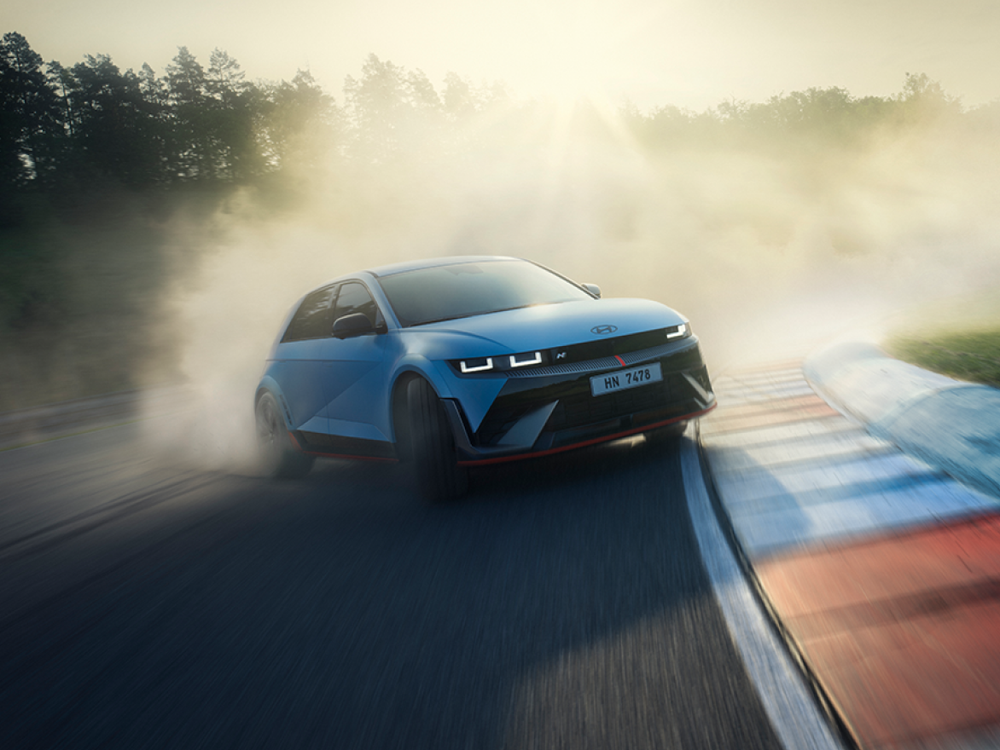
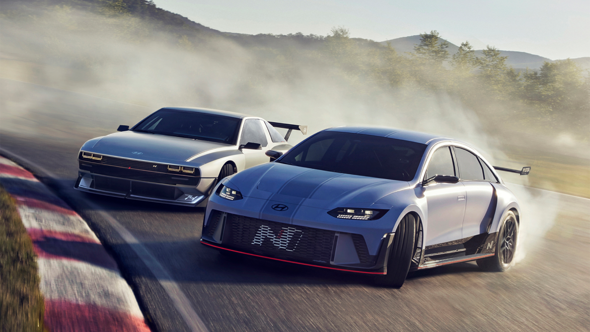
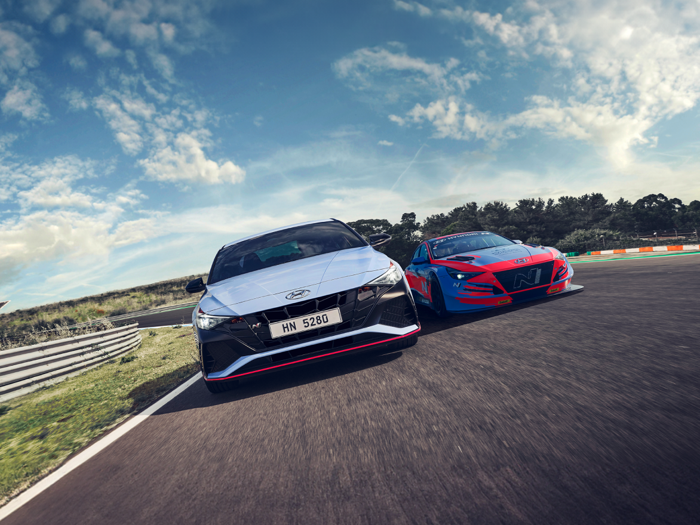
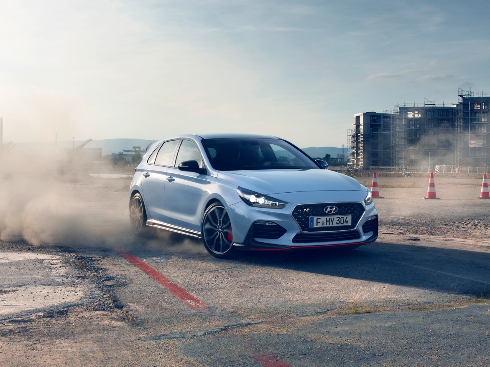

-
2023
Set the new standard of high performance EV
- Launch of the all-new IONIQ 5 N at Goodwood Festival of Speed
- 2023 TCR World Tour Drivers’ championship
Along with our promise of electrification to N customers, we unveiled our first high performance EV, IONIQ 5 N at the Goodwood Festival of Speed. By staying true to our fun to drive philosophy and the 3 pillars of N performance, we received many positive response from the media, including TopGear.com Car of the Year and World Performance Car Award.
 -
2022
Making dreams come true.
- Launch of RN22e, N Vision 74
- Five victories in WRC, our greatest single year tally in the series
- TCR customers secured seven titles, 61 wins, 192 podiums and 55 pole positions in 2022
Made to creating emotional engagement with our fans like never before. With these vehicles we are pushing the limits of design, technology and driving emotion to new heights.
Our message to our fans is that we have an exciting optimistic future ahead of us.
 -
2021
Momentum to grow and expand towards the future.
- The all-new i20 N launch
- Consecutive Launch of the all-new Kona N and the all-new Elantra NHyundai Takes four Podiums and Finishes the WRC in Third Place.
Inspired by the i20 WRC rally car, the all-new i20 N delivers an all-around sporty experience with top-notch engine performance and dynamic technology innovations.
And KONA N stands to change what people expect from an SUV with a powerful combination of versatility, spirited acceleration, agility and racetrack capability, Elantra N, by its various enhancement elements, is expected to become one of the best
options for car enthusiasts who have both needs of performance drive and daily drive. -
2020
Celebrating success
- Veloster N 8-speed DCT launch
- Second consecutive WRC manufacturers’ title
- Participated in Nürburgring 24hr endurance race
- with ELANTRA N TCR & i30 N TCR (TCR Class 1st 2nd)
the N 8-Speed Wet Dual-Clutch Transmission (N DCT ), the new Veloster N enhanced the new Veloster N. Equipped with the all-new delivers a different kind of exhilarating driving fun to customers than its predecessor.
Our second consecutive WRC manufacturers’ title wrapped up an incredible season for our team.
With three wins, 11 podiums, and 54 stage wins, we had plenty of things to celebrate in 2020.

-
2019
On top of the world
- First-ever manufacturers’ championship title in WRC
- i30 N Project C limited edition launch
A momentous year for our company was capped with an inaugural WRC manufacturers’ title, following four victories and a season full of highlights.
There was also plenty of success for our customers around the world.
Norbert Michelisz powered the i30 N TCR to its second consecutive FIA WTCR championship.

-
2018
The New Takeoff
- Establishment of theHigh-Performance Vehicle & Motorsport Division, to Oversee Strategy, Product Planning, Sales and Marketing.
- Consecutive Launch of Veloster N and i30 Fastback N Car Models.
- Leading the 2018 WTCR Series with Top Performance by i30 N TCR Drivers and Team in First Place.
The Veloster N, Korea’s first N model, has been a sensation among customers, leading to strong sales growth.
As such, Veloster N has also been voted the ‘Best Buy’ car in the Kelley Blue Book ‘Performance Car’ division, raising expectations for the US market.
The i30 N TCR displayed its powerful performance and rocked the 2018 FIA World Touring Car as the overall winner with Gabriele Tarquini leading the team.
The i30 N TCR also took 2nd and 4th place in the 24-Hour Nürburgring race in 2018.
-
2017
A New Car fora New Era
- Launch of i30 N, Hyundai’s First High-Performance Car.
- Ramp Up Customer Racing Activities with the Debut of i30 N TCR Which Won its First Race Ever.
The first i30 N model was launched in Europe and collected numerous accolades from renowned media in Europe, in addition to a great amount of interest from consumers.
Autocar, one of the most influential automotive publications, awarded i30 N in their annual awards as a ‘Game Changer’.
Consecutively, Hyundai expanded its customer racing business to TCR, and the i30 N TCR won its first race ever at the Zhejiang international circuit in China. Thus, demonstrating the excellent performance of N vehicles. -
2016
N Making Progress
- Launch of High-performance Racing Concepts RM 16 at the Busan Motor Show and RN 30 at the Paris Motor Show.
- Successful Completion of the 2016 24 Hours Nürburgring Endurance Race with i30 N Prototype.
Hyundai Motor not only took part in the 2016 24 Hours Nürburgring Endurance Race in Germany, but successfully ran both of its vehicles the full length of the grueling 24-hour course, which many other cars never even complete.
A newly developed High-performance N engine showed its ability to perform under harsh conditions, and the public’s first look at the performance of i30 N's powertrain generated a whirlwind of anticipation among drivers around the world.
-
2015
A Glimpse Into the Future
- Launch of the Hyundai High-Performance N Lineup at the Frankfurt Motor Show with N 2025 Vision Gran Turismo and RM 15 Concept Cars.
- Hyundai Takes four Podiums and Finishes the WRC in Third Place.
Step-by-step, the engineers at Hyundai Motors have been building based on their research, developing new technology internally since 2012. In the fall of 2015, the full-on launch of high-performance N was announced along with various new high-performance technologies.
The N 2025 Vision Gran Turismo was also showcased at the Frankfurt Motor Show showing off the future of Hyundai’s high-performance technology.
-
2014
Taking the Podium
- Maiden Victory at Rally Germany.
- Hyundai Motorsport i20 WRC Takes Four Podiums and Finishes Fourth in the WRC.
- Appointment of Albert Biermann as Executive Vice President, December 2014.
Just twelve months after its establishment, the WRC team arrived in Monte-Carlo for its competitive debut with two i20 WRC rally cars.
Later on at Rally Germany, Thierry and Nicolas went on to claim Hyundai Motor’s first WRC victory, in spite of an earlier accident that required mechanics to completely rebuild the car.
-
2013
Full-Scale Debut
- Unveiling of the Newly Improved i20 WRC Concept Car Model at the Geneva Motor Show, March 2013.
- Establishment of the European Technical Center in Nürburgring.
- Debut Presentation of the N Logo and Unveiling of the 2014 WRC Participating Vehicle, December 2013.
N’s Debut at Motorsport

-
2012
A New Contender
- Announcement of re-entry to the World Rally Championship.
- Establishment of Hyundai Motorsport in Germany.
Hyundai announced its re-entry to the WRC and unveiled the New i20 WRC concept car at the Paris Motor Show in September, 2012. And just three months after this announcement, Hyundai Motorsport was established in Alzenau, Germany, propelling Hyundai’s preparation for re-entry to the WRC